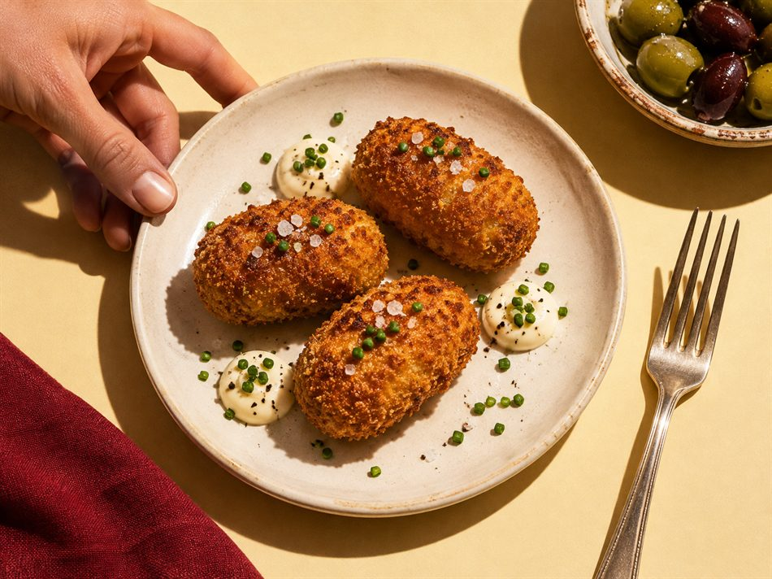
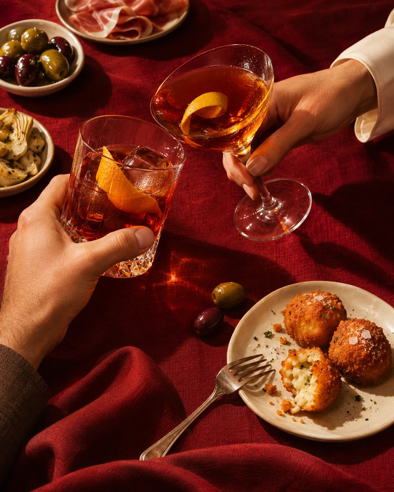
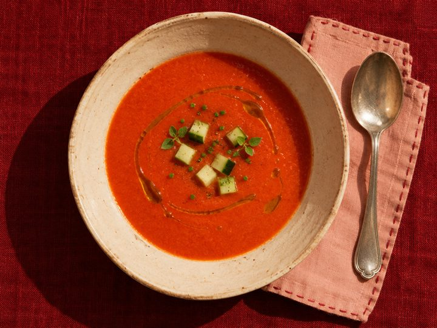
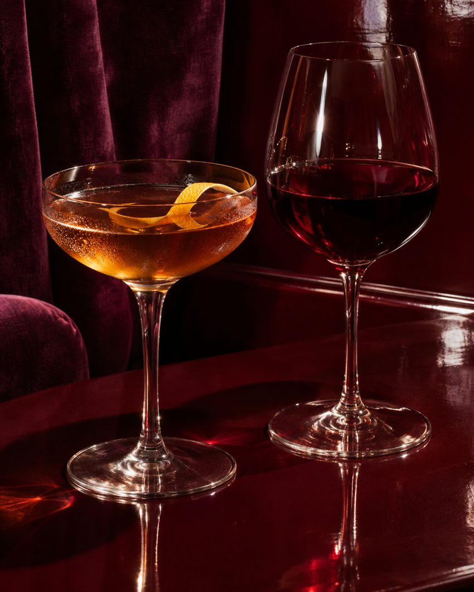
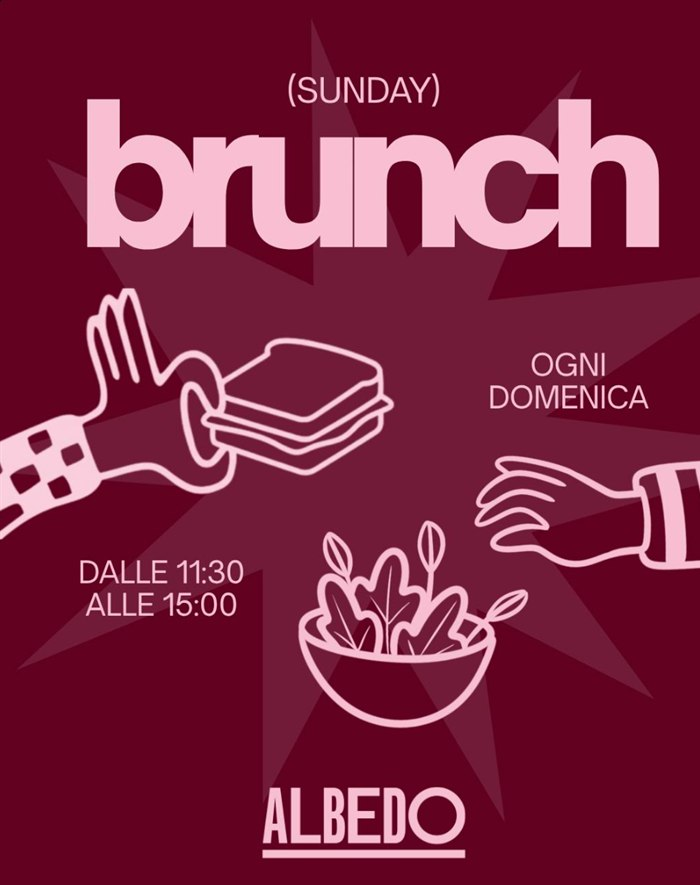

DALLA CUCINATapas & small plates
Piccoli piatti creativi da mettere al centro. Il primo giro è solo l’inizio.
TAPAS BAR · VANCHIGLIA, TORINO
Tapas da passarsi, cocktail da sorseggiare e calici da riempire. Ci trovi a Vanchiglia, a due passi dalla Mole.

Tapas originali, signature drinks e vini, Vanchiglia Torino, good vibes, 5,0 stelle su Google, Sunday lunch e aperitivo.
01 L’ESPERIENZA
Ordina un po’ di tutto e fai girare i piattini. Al bancone o al tavolo, ci sono sempre un calice da abbinare e un dolce artigianale per finire.

DALLA CUCINAPiccoli piatti creativi da mettere al centro. Il primo giro è solo l’inizio.

PROPOSTE FRESCHEFresco e vivace, uno dei piattini da cercare quando passi da Albedo.

DAL BANCONEDrink ricercati, una selezione di vini e birre da bere all’aperitivo o con le tapas.
OGNI DOMENICA
11:30 – 15:00
La domenica ci si siede a tavola già da tarda mattina.
Prenota il brunch
Le immagini di piatti e drink sono illustrative.
03 VIENI A TROVARCI
Siamo in Via Conte Luigi Tarino, nel quartiere Vanchiglia. Per un tavolo, scrivici direttamente su WhatsApp.
| Giorno | Orario |
|---|---|
| Lunedì Oggi | 17:00 – 00:00 |
| Martedì Oggi | Chiuso |
| Mercoledì Oggi | 17:00 – 00:00 |
| Giovedì Oggi | 17:00 – 00:00 |
| Venerdì Oggi | 17:00 – 00:30 |
| Sabato Oggi | 17:00 – 00:30 |
| Domenica Oggi | 11:30 – 23:00 |